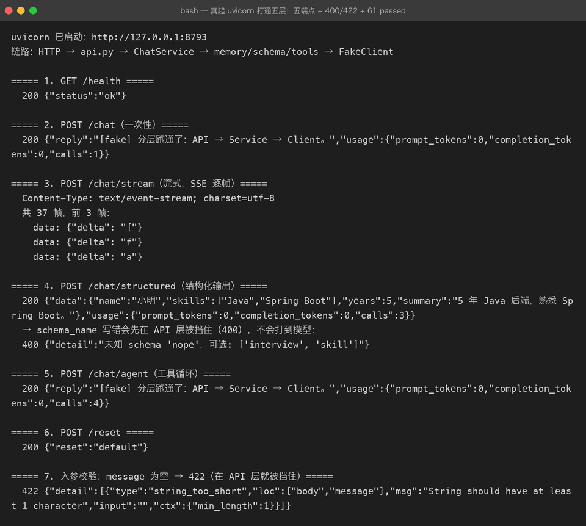

Project 03 — Chapter 09：AI Application Architecture【应用架构】
状态：✅ 已校对 对应代码：
src/assistant/整体
1. 项目要增加什么能力
前八章各自解决了一个点。这一章把它们拼起来：
Prompt（01）+ 消息（02）+ 结构化（03）+ 流式（04）+ 记忆（05）
+ 参数（06）+ 预算（07）+ 工具（08）
= ？本章目标：
给出一套能长期维护的 AI 应用分层结构，并明确每层的职责边界与失败处理。
2. 为什么需要这个知识
AI 应用有一种独特的「熵增」倾向：所有东西都会往 Prompt 里掉。
第 1 周： 业务逻辑在 service.py 里，干干净净
第 4 周： 「这里让模型顺便判断一下吧」→ 逻辑进了 Prompt
第 8 周： Prompt 变成 800 字的说明书，没人敢改
改一行 Prompt，不知道会影响什么这像极了早期 JSP 里写业务逻辑——能跑，但不可维护。
分层不是为了好看，是为了让变化可控：模型会换、Prompt 会改、工具会加，层与层之间的接口稳定，改动就只影响一层。
3. 核心概念
3.1 五层结构
┌─────────────────────────────────────────┐
│ 接入层 cli.py / api.py │ 参数解析、鉴权、协议（HTTP/SSE）
├─────────────────────────────────────────┤
│ 编排层 service.py / agent.py │ 业务流程：串起 prompt/memory/tools
├─────────────────────────────────────────┤
│ 能力层 prompts.py / schema.py / tools.py│ 可独立测试的知识与能力
├─────────────────────────────────────────┤
│ 模型层 client.py / settings.py │ 唯一知道「怎么调 LLM」的地方
├─────────────────────────────────────────┤
│ 支撑层 logging / tokens.py / memory.py │ 可观测、预算、状态
└─────────────────────────────────────────┘铁律：
只有模型层知道 API 长什么样。 换厂商、换模型、加 mock，都只在
client.py里改。
对比一下坏味道：
# ❌ 编排层直接拼 HTTP
async def ask(text):
async with httpx.AsyncClient() as c:
r = await c.post("https://api.deepseek.com/...", json={...})
return r.json()["choices"][0]["message"]["content"]# ✅ 编排层只依赖抽象
async def ask(self, text: str) -> str:
return await self._client.chat(self._conversation.to_messages_with(text))3.2 无状态服务 + 外部化会话
服务本身不保存会话（Chapter 05）：
开发环境：dict[session_id, Conversation] 够用
生产环境：Redis / 数据库 可多副本、重启不丢好处是可以水平扩展；代价是要处理并发写与过期清理。
3.3 每条路径都要有失败处理
| 失败点 | 处理 |
|---|---|
| 配置缺失 | 启动即失败，给出清晰的设置指引（P02 已做到 exit 2） |
| 上游限流 429 | 指数退避重试（P02 已实现） |
| 上游超时 | 设分层超时，返回明确错误而不是无限等 |
| 结构化输出不合规 | 校验失败重试一次（Chapter 03） |
| 历史超窗口 | 先裁剪，仍失败则提示开新会话（Chapter 07） |
| 工具循环失控 | 轮数上限（Chapter 08） |
| 客户端断开 | 取消上游、记录日志 |
3.4 可观测性：三个必埋的指标
1. 延迟 latency_ms（含首字延迟 TTFB）
2. 消耗 prompt_tokens / completion_tokens / 估算费用
3. 失败率 按错误类型分类（限流 / 超时 / 解析失败 / 工具失败）有了这三类，你才能回答「为什么这个月账单翻倍」「为什么用户说变慢了」。
3.5 测试策略
Fake 模型 —— 所有模型调用走 BaseLLMClient 抽象，测试用 FakeClient（零网络零花费）
契约测试 —— Prompt 模板的变量校验、schema 生成结果用快照测试
集成测试 —— TestClient 打真实 HTTP 路径，但模型层仍是 Fake
Prompt 回归 —— 固定样例集，人工抽检（完全自动判定不现实）原则：测试里绝不出现真实 API Key，也绝不联网。
3.6 成本与性能的三个杠杆
1. 缓存 —— 相同 Prompt + 参数的结果缓存（尤其适合抽取/分类）
2. 裁剪 —— 历史预算控制（Chapter 05/07），成本从 O(n²) 降下来
3. 小模型 —— 简单任务路由到小模型，复杂任务才上大模型4. 项目代码
src/assistant/
├── cli.py # 接入层：命令行
├── api.py # 接入层：FastAPI（/chat /chat/stream /chat/structured /chat/agent）
├── service.py # 编排层：普通问答
├── agent.py # 编排层：工具循环
├── prompts.py # 能力层：模板
├── schema.py # 能力层：结构化输出
├── tools.py # 能力层：工具注册表
├── memory.py # 支撑层：会话与裁剪
├── tokens.py # 支撑层：预算与成本
├── client.py # 模型层：唯一知道 API 细节的地方（含 FakeClient）
├── settings.py # 模型层：配置
├── errors.py # 异常层级
└── logging_setup.py # 支撑层：日志一次请求的完整调用链：
cli/api
↓ 解析参数、取 session_id
service.ask(text)
↓ memory.add_user(text)
↓ tokens 预算校验 → 必要时裁剪
↓ prompts 渲染（system / 场景 Profile）
↓ client.chat(messages, tools=?, response_format=?)
↓ schema 校验（结构化场景）
↓ memory.add_assistant(reply)；记录 usage 到日志
↓ 返回5. Java ↔ Python 对比
| Java (Spring Boot) | Python (本项目) | 说明 |
|---|---|---|
@RestController | FastAPI APIRouter | 接入层 |
@Service | service.py / agent.py | 编排层 |
@Component / 工具类 | prompts.py / tools.py | 能力层 |
@Repository / RestClient | client.py | 外部依赖的封装，最该被隔离的一层 |
| 接口 + 实现类（可换实现） | BaseLLMClient ABC + FakeClient | 依赖倒置，可测可换 |
@ConfigurationProperties | Settings frozen dataclass | 配置 |
自定义异常 + @ControllerAdvice | errors.py + FastAPI exception handler | 异常分层 |
| Micrometer + Actuator | usage 日志 + /metrics | 可观测 |
@Valid | Pydantic | 边界校验 |
一个值得记住的原则（两边都成立）：
外部依赖（数据库、HTTP 客户端、LLM）必须被接口隔离。 否则单元测试只能靠 mock 框架打补丁，而依赖倒置让你直接换一个实现。
6. 常见坑
坑 1：业务逻辑写进 Prompt
「让模型顺便判断一下用户是不是 VIP」——这个判断进了 Prompt，就意味着：没法单测、没法灰度、改了没痕迹。
正确做法：VIP 判断是传统代码的事，结果作为参数喂给 Prompt。
坑 2：编排层直接用 httpx
见 3.1。这是最常见的分层破坏。
坑 3：同步阻塞
在 async 函数里用同步的 requests / time.sleep()，会把整个事件循环堵死（P02 Chapter 01 已讲）。
坑 4：没有幂等与重试边界
重试对「生成文本」是安全的，对「写数据库」不是。工具层要区分只读与写入。
坑 5：日志里记了用户原文
用户可能输入手机号、身份证。日志脱敏不只是脱 API Key。
坑 6：全局单例会话
Chapter 05 坑 3，属于数据泄漏级别。
坑 7：把配置散落在各层
「这个超时时间写在 client.py，那个写在 api.py」——统一进 Settings。
7. 实战挑战
挑战 1：画出（或写出）本项目一次请求的完整调用链，标注每层负责什么。
挑战 2：加一个 /metrics 端点或用日志输出：累计请求数、失败率、累计 token 与估算费用。
挑战 3（进阶）：实现「小模型路由」——简单问答走便宜模型，命中关键词（如「分析」「总结」）时走强模型，并在日志里记录路由决策。
8. 主动回忆
- 五层分别是什么？哪一层是「唯一知道 API 长什么样」的？
- 为什么业务逻辑不该写进 Prompt？
- 服务为什么要做成无状态？会话存哪？
- AI 应用必须埋的三种可观测指标是什么？
- 测试策略里，为什么强调「零网络、零真实 Key」？
- 降低成本与延迟的三个杠杆是什么？
- 重试在什么场景下是危险的？
9. 本节完成标准
- [ ]
src/的目录符合五层结构，编排层不出现 httpx / API URL - [ ] 换模型厂商只需要改
client.py+settings.py - [ ] 全部测试离线运行（FakeClient），无真实 Key
- [ ] 日志里有 latency / token / 错误类型三类信息
- [ ] CLI 与 API 两条入口复用同一个 service
- [ ] 有真实运行验证：普通问答、流式、结构化、工具调用四条路径全通
Project 03 完成。 此时的能力闭环：
Prompt 工程 + 消息结构 + 结构化输出 + 流式 + 记忆
+ 参数调优 + 成本预算 + 工具调用 + 分层架构
= 一个真正可用的 AI 应用（而不只是「会聊天的壳」）回到项目主页：../README.md 下一步：Project 04 —— 让应用拥有外部知识（RAG）。
测试策略
整套 src/ 用 FakeClient（不联网、不用真实 Key）做离线测试，当前 61 / 61 通过：

